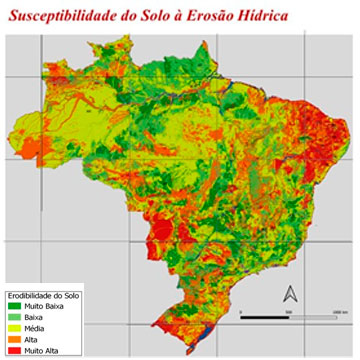

Para o Risco de Erosão Hídrica, primeiros resultados (atualizado para 1990 a 2021) utilizando metodologia proposta pela OCDE: i) levantamento e avaliação das fontes de dados e informações disponíveis incluindo dados advindos de estimativas de perda de solo por erosão, compilados da literatura; ii) Utilização de dados oriundos de modelos geoespaciais de erodibilidade e suscetibilidade do solo à erosão hídrica no Brasil (https://geoinfo.cnps.embrapa.br), adequando o indicador à realidade nacional; e, iii) proposição de ajustes e melhorias metodológicas para o mapeamento do risco potencial de erosão hídrica, associando a informação sobre erodibilidade do solo (Fator K – análise especialista de 8.000+ componentes de unidades de mapeamento na escala 1:250.000 – IBGE), erosividade das chuvas (Fator R - dados mensais de precipitação da rede de ZARC e SGB/CPRM - Total de 3.659 estações pluviométricas) e do relevo (Fator LS - classes de declividade geradas a partir de modelo digital do terreno - SRTM 30m). Como proxy para o Fator C (cobertura do solo) foram utilizadas técnicas de sensoriamento remoto em associação a mapas de uso e de cobertura do solo (MAPBIOMAS e LAPIG/UFG).
Outro modelo de avaliação do potencial de controle de erosão hídrica foi desenvolvido no período. O modelo se baseia na estimativa de intensidade da chuva, cm h-1 e de dados de condutividade hidráulica (ksat cm h-1), determinados a campo ou em laboratório. O controle da erosão hídrica, em cm h-1 utiliza com proxy a diferença entre a intensidade da chuva em um determinado período de recorrência e a capacidade de infiltração calculada a partir da condutividade hidráulica para bacias hidrográficas, regiões, estados ou municípios. A validação do modelo proposto permitirá nortear a adoção de práticas e técnicas de manejo sustentável do solo e a formulação de políticas públicas de conservação do solo e da água.
O indicador de Risco de Erosão Eólica, fenômeno raro no Brasil, vem sendo estudado quanto a sua adequabilidade e sua factibilidade em função do procedimento metodológico e da disponibilidade de dados.